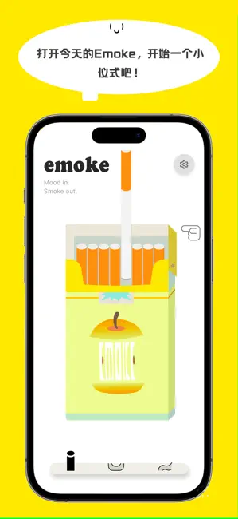

Emoke 迭代一年半，一款情绪记录 App 的"慢哲学"是怎么长出来的
从 v1.0 到如今的 v1.1.10，Emoke 走了一条和主流情绪 App 完全不同的路：不做社区、不加关注、甚至连燃烧速度记忆这个"理所当然"的功能都拖着——但它的核心仪式感却在一次次小版本里磨得越来越讲究。
现在这版：它已经成了一个什么东西
我打开手机看了一眼，这款emoke官网上标注的最新版本号停在 v1.1.10，Android 那边是 5.2。界面和一年多前比变化不大——还是那张被点燃的纸卷、还是那片烟灰缸、还是选贴纸写小纸条的流程。但如果你每天都用，会发现那些细微的触感真的在变好。
比如燃烧速度。现在你可以在点燃界面左右拖滑块，决定这根纸卷是 5 秒快速烧完还是 15 秒慢慢燃尽——后者刚好够跟着呼吸做三四轮深呼吸。这个调节本身不算什么惊人功能，但它暴露了 Emoke 团队一直在死磕的一件事：把"点烟"这个动作做得够像一次真实的、有重量的情绪释放。

但我得说一个争议——从 App Store 评论到现在，"燃烧速度没有记忆"这个反馈被提了不下几十次。你这根选了慢速，下一根默认又回中速。按理说这只是加一个本地偏好存储的事，不复杂，但就是没修。
这不是 bug 列表里被遗漏的小项，我觉得它是理解 Emoke 迭代逻辑的关键切口。
它从哪起步，关键转折点在哪些版本
样本文档里能追溯到的最早版本是 v1.1.3，那是 2025 年 2 月 14 日——情人节，他们放了分享模式。在此之前 Emoke 是什么样？样本文档没提太多，但从"首次加社交功能"这个动作能反推，v1.0 到 v1.1.2 之间的 Emoke 是完全封闭的——你自己点烟、自己写、自己看，连和另一个用户产生一丝连接的可能都没有。
v1.1.3 的分享模式本身也很反常识。它不是好友、不是关注、不是信息流推送，而是蓝牙/局域网范围内的匿名单向发送。你点燃一根纸卷后选"分享"，附近开着 Emoke 的人会收到一张带主题装饰的小卡片——但卡片上没有你的任何信息，没有昵称、没有头像、没有 ID。这和"社交"这个词的常规语义差距太大了，更像是一个"把此刻的情绪轻轻放出去，不求回音"的彩蛋。
然后几个月安静地过去。v1.1.5 修了多张照片显示的 bug，v1.1.7 在 9 月 6 日一口气放了三件事：回看模式支持点击贴纸放大查看完整纸条内容、照片可以全屏缩放、分享模式的跨设备连接体验改善了（iOS 和 Android 终于能互相分享了）。v1.1.9 紧接着在 9 月 24 日加了中秋主题贴纸——这是他们第一次做节日限定皮肤。

我把这些版本号和变更放在一起看，发现一个挺有意思的节奏：大版本之间的间隔不短，但每次都在"让一次记录的体验更完整"这条线上加点东西。v1.1.3 加了"能不能让别人知道"的出口；v1.1.5 和 v1.1.7 补的是"回看时能不能看清"的入口；v1.1.9 是给仪式感再披一层皮肤。没有哪个版本突然跳去加新模块、换商业模式、或者做用户增长。
从迭代节奏看团队的优先级
如果把 Emoke 的迭代史当成一家公司的决策复盘，最显眼的不是他们做了什么，而是他们一直没做什么。
他们死磕的是什么？ 是"一次情绪记录"这件事从头到尾的每一个触感。点燃时的速度选择、回看时纸条能不能完整显示、分享卡片的主题边框——这些都是一个人安安静静使用时才会在意的细节。而且他们在"点燃即确认"这个设计原则上异常坚定：回看模式下没有编辑功能，纸条写错了、贴纸选错了、照片放错了，都只能另外点一根新纸卷。emoke文档里的解释是"情绪是即时的，事后改来改去反而违背初衷"——我能理解，这不是技术限制，是价值观选择。
他们一直不管的是什么？ 是社交裂变和用户增长。分享模式到今天还是那个匿名单向的样子，没有好友体系、没有评论点赞、没有排行榜、没有社区。燃烧速度记忆、贴纸编辑、多条分享同时发送——这些用户高频提的"应该有"的功能，在优先级列表里明显排在"把现有体验磨得更顺"之后。
从emoke下载拿到安装包后，还有一个点值得说：Emoke 的 Pro 会员定价。永久版 ¥28，月订阅 ¥12，权益完全一致。没有"永久版独享"的激励，没有年套餐折扣，就是直白地让用户二选一。这在情绪类 App 里相当克制——大多数同类产品会用阶梯权益把用户往更高价的档位推，Emoke 不玩这一套。
照这个路线，下一步大概率会走向哪里
我先声明，以下都是从迭代规律推的，不是官方口径。
首先，现有仪式感的打磨还会继续。燃烧速度记忆这个"悬案"大概率迟早会修，但修的时候可能不是简单加个开关——团队说不定会在"默认值"上做文章，比如让"每次都重新选择"成为一种有意的提醒，或者给记忆功能加一个 Pro 开关。毕竟他们对"仪式感"这件事的执念不像能容忍一个太粗糙的实现。
其次，分享模式可能会有小进化，但不会变成社交网络。跨设备连接已经改善了、主题贴纸已经加了，下一步可能是让分享卡片能保存到本地相册，或者支持更多主题皮肤。但我不觉得他们会加好友系统——匿名单向分享和"点燃即确认"的设计哲学是同一根逻辑线上的东西，很难拆。
至于商业化，¥28 永久版这个定价看起来不会变。如果要加新的 Pro 权益，更可能是新增主题包、字体、或者统计维度这类和核心体验不冲突的东西，而不是把核心功能锁在付费墙后面。
最后说一个不太确定的猜测：回看模式的编辑功能可能永远不会有。Emoke 团队对"情绪记录的即时性"这件事看得太重了，编辑功能一旦开了口子，整个"点燃即确认"的产品叙事就会松掉。与其妥协，不如保持克制。
总之，Emoke 的迭代史给我的感受是：这不是一家赶风口的团队，他们在一件很小很具体的事上慢慢磨，磨到让用的人觉得"我懂这个产品想让我做什么"。这套资料顺手同步到了GitHub、Gitee、GitCode三个仓库，国内访问也方便。在情绪 App 这个赛道里，这反而是最稀缺的东西。